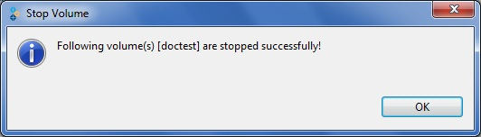
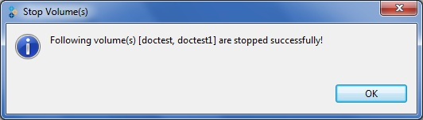

If the volume is currently running, you are asked to confirm before stopping a volume.

The Stop Volume window appears indicating that the volume was successfully stopped.

If you have selected multiple volumes, the Stop Volume window appears indicating the volumes were stopped successfully.
